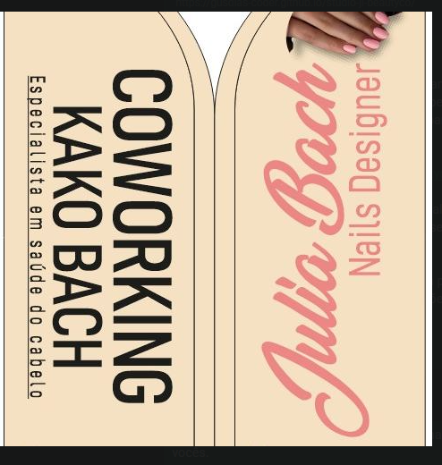

Cabelos
Cortes, escovas, coloração, mechas e tratamentos capilares.
Consultar cabelos ↗Beleza · cuidado · identidade
Um coworking de beleza pensado para profissionais e clientes que valorizam atendimento, criatividade e cuidado em cada detalhe.
Conhecer o espaço ↗Ver serviços ↓Atendimento com horário agendado

01 / Nosso cuidado
Um espaço para cuidar dos cabelos, das unhas e da sua autoestima com profissionais que entendem o seu estilo.
Cortes, escovas, coloração, mechas e tratamentos capilares.
Consultar cabelos ↗Unhas cuidadas com acabamento, criatividade e atenção aos detalhes.
Consultar nails ↗Um ambiente pronto para profissionais da beleza atenderem com liberdade.
Conhecer o espaço ↗Serviços, valores e disponibilidade são confirmados diretamente com a equipe.
02 / O espaço
03 / Sobre o coworking
O Coworking Kako Bach nasceu para reunir profissionais da beleza em um ambiente especial, com estrutura, acolhimento e liberdade para cada atendimento.
Aqui, cada cliente encontra cuidado personalizado e cada profissional encontra espaço para desenvolver seu trabalho.
Kako Bach Coworking de beleza04 / Vamos conversar
Fale com a equipe para consultar serviços, horários e disponibilidade do espaço.
Conversar pelo WhatsApp ↗Envie uma mensagem para consultar a agenda.